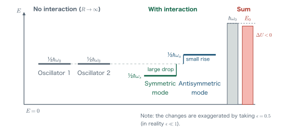
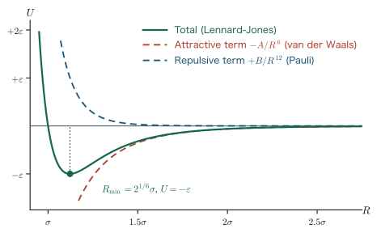
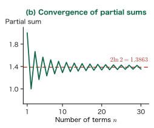
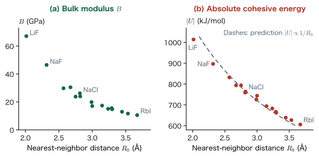

Chapter 13The van der Waals Force and the Madelung Energy
In Chapter 11 we derived the covalent bond and the ionic bond from the secular equation, and in Chapter 12 we used symmetry (point groups and character tables) to judge qualitatively which atomic orbitals can form bonds with one another. Up to this point, the leading role has always been played by “the overlap of electron wave functions.” But that is not the only force that holds real materials together. Even nonpolar noble-gas atoms become liquids and then solids if they are cooled enough. This is because there exists a weak attraction—the van der Waals force—that acts even at distances where the electron clouds hardly overlap. In an ionic crystal such as NaCl, on the other hand, the transfer of electrons is complete, and what remains is an assembly of point charges. In this case, what stabilizes the crystal is the infinitely continuing Coulomb sum, that is, the Madelung energy. In this chapter we derive these two extremes, the “weakest bond” and the “most classical and strong bond,” both without skipping a single line of the mathematics. In the former, the zero-point vibration of quantum mechanics plays the leading role; in the latter, a purely geometrical constant (the Madelung constant) does. Finally, we show how the Madelung energy is used in actual research, through examples from the course instructor's own research.
- Why neutral, nonpolar atoms attract each other—what it means that “the electrical balance is instantaneously broken”
- A complete derivation of the van der Waals force from a model of two coupled oscillators: setting up the Hamiltonian $\Ham=\Ham_0+\Ham_1$, the expansion for $R\gg\abs{x_1},\abs{x_2}$, and the appearance of the dipole–dipole interaction $-2\ee^2x_1x_2/(4\pi\eps R^3)$
- Diagonalization by the normal coordinates (a 45-degree rotation) $x_s=(x_1+x_2)/\sqrt{2}$, $x_a=(x_1-x_2)/\sqrt{2}$, and the separation into two independent harmonic oscillators
- That the difference in zero-point energy yields $\Delta U=-A/R^6$; the consequence that without quantum mechanics there would be no van der Waals force; and the Lennard-Jones potential
- The electrostatic energy of an ionic crystal and the definition of the Madelung constant $A_\mathrm{M}$, and a hand calculation of $A_\mathrm{M}=2\ln 2$ for a one-dimensional ionic crystal
- The three-dimensional Madelung constants (1.7476 for the NaCl type, etc.), and estimates of the cohesive energy and bulk modulus when Born–Mayer repulsion is added
- Chemical trends of the alkali halides: the smaller $R_0$ is, the harder the crystal and the harder it is to pull apart
- Actual calculation of the Madelung energy with pymatgen (the Ewald method), and application examples in research (structural phase transitions and surface reconstruction)
13.1 From Molecules to Solids — The Force That Condenses Even Nonpolar Molecules
13.1.1 Four kinds of chemical bonds
The interactions that make a substance cohere are traditionally classified into the following four. Of these, the top two were the ones treated in Chapters 11 and 12.
| Type | Essence | Typical bond energy | Representative examples |
|---|---|---|---|
| Covalent bond | Sharing of electrons through the overlap of atomic orbitals (Chapters 11 and 12) | 200–1000 kJ/mol | Diamond, Si, H$_2$ |
| Ionic bond | Complete transfer of electrons and the Coulomb force between point charges | 600–1000 kJ/mol | NaCl, MgO |
| Metallic bond | A sea of delocalized electrons (treated in Chapter 14) | 100–800 kJ/mol | Na, Fe, Cu |
| van der Waals bond | Instantaneous breakdown of the electrical balance | 0.3–10 kJ/mol | Ar crystals, molecular crystals, between the layers of graphite |
The energy of the van der Waals bond is two to three orders of magnitude smaller than that of the other three. Nevertheless, the reason we take the trouble to treat it carefully in this chapter is that this force acts between all atoms and molecules without exception. Even noble-gas atoms, which can form neither covalent nor ionic bonds, form crystals through this slight attraction—Ar melts at 84 K. Many phenomena are governed by the van der Waals force, from the folding of biopolymers and the ease with which the layers of graphite peel apart to the mechanism by which geckos cling to walls.
Why? Why do they attract each other even though they are neutral and nonpolar?
In high school chemistry we learn that “the van der Waals force is what condenses even nonpolar molecules.” But rereading this explanation after understanding covalent and ionic bonds mathematically only makes it more puzzling. An Ar atom is electrically neutral, and since its electron cloud is spherically symmetric, it has no permanent dipole moment either. By the common sense of electrostatics, there should be no Coulomb interaction between two neutral, nonpolar bodies. Why, then, does an attraction arise?
Let us state the conclusion first. The electrical balance of a neutral atom holds only “on a time average.” The electrons fluctuate quantum-mechanically around the nucleus, and if we cut out a single instant, the center of the electron cloud is displaced from the position of the nucleus. That is, an instantaneous dipole is constantly being created and annihilated. And this instantaneous dipole induces a dipole in the neighboring atom. The induced dipole is always oriented so as to attract the original dipole. Therefore, even when we take the time average, only the attraction remains. Sections 13.2–13.5 of this chapter carry this qualitative story through to the end, using a model for which an exact quantum-mechanical solution is available.
13.1.2 The two components of the van der Waals force
The causes of the “breakdown of the electrical balance” can be divided broadly into two.
- Spontaneous polarization due to the quantum behavior of electrons. Even if nothing is done from outside, the positions of the electrons fluctuate because of the uncertainty principle. The attraction that arises when this fluctuation becomes correlated with that of a neighboring atom is called the London dispersion force. This is the only component that acts between nonpolar molecules.
- Polarization due to external charges or permanent dipoles. If an ion or a polar molecule is nearby, its electric field induces a dipole. The interaction through this is called the interaction due to an induced dipole.
What we derive in this chapter is the London dispersion force of item 1. This is because it is the most universal and, at the same time, the most “quantum-mechanical.”
Notation: The electrostatic constants used in this book
This book uses SI units throughout (as specified, we do not use atomic units). We write the elementary charge as $\ee$ and the vacuum permittivity as $\eps$, and we write the electrostatic potential energy of two point charges $q_1,q_2$ separated by a distance $r$ as
$$ U=\frac{1}{4\pi\eps}\frac{q_1q_2}{r} $$If the charges have the same sign, $U\gt 0$ (repulsion); if they have opposite signs, $U\lt 0$ (attraction). Hereafter, the combination $\dfrac{\ee^2}{4\pi\eps}$ appears repeatedly. In Section 13.8 we give its value in practical units ($14.400\ \mathrm{eV}\,\text{Å}$); it is worth remembering, because it speeds up calculations.
13.2 Setting Up the Coupled-Oscillator Model
13.2.1 Setting up the model
To express “the electron cloud fluctuates” in a formula, we simplify the atom as much as possible. The simplest model is a single electron connected to a nucleus by a spring. We prepare two such sets and line them up on a straight line, separated by a distance $R$.
Definition: The coupled-oscillator model of the van der Waals force
Place four particles on a straight line (the $x$ axis). Particles 1 and 3 are protons (charge $+\ee$), and particles 2 and 4 are electrons (charge $-\ee$, mass $m$). Particles 1 and 2, and particles 3 and 4, are each joined by a spring with spring constant $C$ and natural length $L$. By the Born–Oppenheimer approximation (Chapter 8), the protons are heavy and are regarded as being at rest, with their separation fixed at $R$.
Let the displacements of the electrons from their equilibrium positions be $x_2$ for particle 2 and $x_1$ for particle 4. The coordinates of the particles are given by
$$ \text{proton 1}:0,\qquad \text{electron 2}:L+x_2,\qquad \text{proton 3}:R,\qquad \text{electron 4}:R+L+x_1 $$In other words, the two “atoms” face the same direction, and their dipole moments both point in the $-x$ direction.
Why? Why may we represent an atom by a “spring”?
An electron is not really attached to a spring. However, when an electron is displaced slightly from its equilibrium position around the nucleus, the restoring force is obtained, for any binding potential $V(x)$, by a Taylor expansion about the equilibrium point $x=0$:
$$ V(x)=V(0)+\underbrace{V'(0)}_{=0}x+\frac{1}{2}V''(0)x^2+\cdots\simeq \text{const.}+\frac{1}{2}Cx^2 $$so that the electron always behaves as a harmonic oscillator (with $C\equiv V''(0)$). The point is that $V'(0)=0$ at the equilibrium point, so the first-order term vanishes. That is, “small fluctuations are always a harmonic oscillator”, and this is the most powerful approximation, used in every corner of physics. Moreover, the harmonic oscillator is one of the few systems that can be solved exactly in quantum mechanics, so all of the later calculations can be followed by hand. Invoking a spring is not cutting corners; it is the correct first approximation.
13.2.2 Writing down the Hamiltonian
We write the total Hamiltonian of the system as a sum of the spring part $\Ham_0$ and the Coulomb interaction $\Ham_1$ between the two “atoms.” Since the protons are fixed, they have no kinetic energy. Writing $p_2$ for the momentum of electron 2 and $p_1$ for that of electron 4, we have
$$ \begin{equation} \Ham_0=\frac{p_1^2}{2m}+\frac{1}{2}Cx_1^2+\frac{p_2^2}{2m}+\frac{1}{2}Cx_2^2 . \label{eq:13-h0} \end{equation} $$This is a pair of independent harmonic oscillators. The angular frequency of both is
$$ \begin{equation} \omega_0=\sqrt{\frac{C}{m}} \label{eq:13-omega0} \end{equation} $$and the ground-state energy is $\tfrac12\hbar\omega_0$ for each, $\hbar\omega_0$ in total.
Next, we write down the Coulomb interaction acting between the two atoms. From Figure 13.2, there are four particle pairs: 1–3 (proton–proton), 2–4 (electron–electron), 1–4, and 2–3 (1–2 and 3–4 are already absorbed into the springs, so we do not count them). Since the distance for each pair is as shown in Figure 13.2, we obtain
$$ \begin{equation} \Ham_1=\frac{1}{4\pi\eps}\left[ \underbrace{\frac{\ee^2}{R}}_{1\text{–}3} +\underbrace{\frac{\ee^2}{R+L+x_1-(L+x_2)}}_{2\text{–}4} -\underbrace{\frac{\ee^2}{R+L+x_1}}_{1\text{–}4} -\underbrace{\frac{\ee^2}{R-(L+x_2)}}_{2\text{–}3} \right]. \label{eq:13-h1} \end{equation} $$Note the signs. The pair 1–3 is proton–proton ($+\ee$ and $+\ee$), and the pair 2–4 is electron–electron ($-\ee$ and $-\ee$), so the product of charges is $+\ee^2$ and the interaction is repulsive; the pairs 1–4 and 2–3 are proton–electron, so the product is $-\ee^2$ and the interaction is attractive. The total Hamiltonian is
$$ \Ham=\Ham_0+\Ham_1 $$The fact that this $\Ham_1$ links $x_1$ and $x_2$ (couples them) is the key to everything that follows.
Math Note: The exact solution of the one-dimensional harmonic oscillator (review)
The one-dimensional harmonic oscillator of mass $m$ and spring constant $k$
$$ \hat{H}=\frac{\hat{p}^2}{2m}+\frac{1}{2}k\hat{x}^2 $$has energy eigenvalues, expressed in terms of the angular frequency $\omega=\sqrt{k/m}$, as
$$ E_n=\left(n+\frac{1}{2}\right)\hbar\omega,\qquad n=0,1,2,\dots $$Even for $n=0$ the energy does not become $0$; $\tfrac12\hbar\omega$ remains. This is called the zero-point energy. In classical mechanics, “if the particle is at rest, both the kinetic energy and the potential energy are $0$,” but in quantum mechanics, because of the uncertainty relation $\Delta x\,\Delta p\ge\hbar/2$, $x$ and $p$ cannot both be made $0$ simultaneously. The star of this chapter is precisely this $\tfrac12\hbar\omega$.
13.3 Expansion for $R\gg\abs{x_1},\abs{x_2}$ — The Appearance of the Dipole–Dipole Interaction
13.3.1 First, drop $L$
Eq. \eqref{eq:13-h1} has $x_1,x_2$ in its denominators, so we cannot handle it as it stands. Let us consider the situation in which the atoms are sufficiently far apart, that is, $R$ is much larger than the bond length $L$. If $R\gg L$, we may put
$$ R+L+x_1\simeq R+x_1,\qquad R-(L+x_2)\simeq R-x_2 $$The distance between 2 and 4 is $R+x_1-x_2$, because $L$ cancels out of it from the start, so in the end
$$ \begin{equation} \Ham_1\simeq\frac{\ee^2}{4\pi\eps}\left[\frac{1}{R}+\frac{1}{R+x_1-x_2}-\frac{1}{R+x_1}-\frac{1}{R-x_2}\right] \label{eq:13-h1-nol} \end{equation} $$We start from this form in what follows.
Caution: The physical meaning of dropping $L$
The operation “drop $L$ because $R\gg L$” corresponds, mathematically, to discarding the terms of first order in $L/R$. Among the discarded terms is the interaction between the permanent dipoles $-2\ee^2L^2/(4\pi\eps R^3)$ created by the natural length $L$ itself. In a real neutral atom, however, the center of the electron cloud lies at the position of the nucleus when averaged over time, and there is no permanent dipole (Figure 13.1(a)). $L$ is merely a convenience of the model, the “natural length of the spring,” and does not imply a permanent dipole. The only physically meaningful quantities are the fluctuations $x_1,x_2$ about equilibrium, and therefore Eq. \eqref{eq:13-h1-nol}, from which $L$ has been dropped, correctly describes the London dispersion force that we want to know. If you want to treat the interaction between polar molecules that have permanent dipoles (the Keesom force), you should keep the terms in $L$.
13.3.2 Carrying out the binomial expansion
Suppose the displacements are small compared with $R$, that is, $R\gg\abs{x_1},\abs{x_2}$, and factor out $\ee^2/(4\pi\eps R)$.
$$ \Ham_1=\frac{\ee^2}{4\pi\eps R}\left[1+\frac{1}{1+\dfrac{x_1-x_2}{R}}-\frac{1}{1+\dfrac{x_1}{R}}-\frac{1}{1-\dfrac{x_2}{R}}\right] $$Math Note: Expansion of $(1+u)^{-1}$
For $\abs{u}\lt 1$, the formula for the sum of a geometric series gives
$$ \frac{1}{1+u}=1-u+u^2-u^3+\cdots $$Indeed, letting $S$ denote the right-hand side, we have $S-(-u)S=1$, that is, $(1+u)S=1$. More generally, in the binomial expansion
$$ (1+u)^{\alpha}=1+\alpha u+\frac{\alpha(\alpha-1)}{2!}u^2+\cdots $$setting $\alpha=-1$ gives $1-u+u^2-\cdots$. In this section we keep terms up to second order in $u$. Keeping terms up to second order is the essence, as we will see shortly.
Let $u_1\equiv x_1/R$ and $u_2\equiv x_2/R$, and expand each term to second order.
$$ \begin{align} \frac{1}{1+(u_1-u_2)}&=1-(u_1-u_2)+(u_1-u_2)^2+\cdots \notag\\ \frac{1}{1+u_1}&=1-u_1+u_1^2+\cdots \notag\\ \frac{1}{1-u_2}&=1+u_2+u_2^2+\cdots \notag \end{align} $$Substituting these, we collect the contents of the square brackets order by order.
$$ \begin{align} \left[\ \cdots\ \right]&=1+\bigl\{1-(u_1-u_2)+(u_1-u_2)^2\bigr\}-\bigl\{1-u_1+u_1^2\bigr\}-\bigl\{1+u_2+u_2^2\bigr\}\notag\\[4pt] &=\underbrace{(1+1-1-1)}_{0\text{th order}}+\underbrace{\bigl\{-(u_1-u_2)+u_1-u_2\bigr\}}_{1\text{st order}}+\underbrace{\bigl\{(u_1-u_2)^2-u_1^2-u_2^2\bigr\}}_{2\text{nd order}} .\notag \end{align} $$Let us look at each order separately. First, the zeroth-order term is
$$ 1+1-1-1=0 $$which vanishes. This is only natural: it means that when $x_1=x_2=0$ there is no net interaction between the two neutral atoms (seen as pairs of point charges at distance $R$). Next, the first-order term is
$$ -(u_1-u_2)+u_1-u_2=-u_1+u_2+u_1-u_2=0 $$and this too cancels completely. Finally, for the second-order term, using $(u_1-u_2)^2=u_1^2-2u_1u_2+u_2^2$ we have
$$ (u_1^2-2u_1u_2+u_2^2)-u_1^2-u_2^2=-2u_1u_2 $$so that only the cross term in $u_1u_2$ survives. Therefore
$$ \Ham_1=\frac{\ee^2}{4\pi\eps R}\cdot\left(-\frac{2x_1x_2}{R^2}\right) $$that is,
13.3.3 This is the dipole–dipole interaction
Let us make the meaning of Eq. \eqref{eq:13-dipole} clear. Considering only the deviation from equilibrium, the instantaneous dipole moment of atom 1 (proton 1 + electron 2) is $p_2=-\ee x_2$, and that of atom 2 (proton 3 + electron 4) is $p_1=-\ee x_1$. Then Eq. \eqref{eq:13-dipole} can be written as
$$ \Ham_1=-\frac{1}{4\pi\eps}\frac{2p_1p_2}{R^3} $$This is precisely the interaction energy of two dipoles lined up on a single straight line (the longitudinal configuration), which you learn in electromagnetism. Its characteristic features are that it is inversely proportional to the cube of the distance and that the coefficient is $2$.
Physical Meaning: Where do $1/R^3$ and the factor $2$ come from?
The electric field created by a dipole moment $p_1$ at a point at distance $R$ is, along the dipole axis (the longitudinal configuration), $E=\dfrac{1}{4\pi\eps}\dfrac{2p_1}{R^3}$. If a dipole $p_2$ is placed in this field in the same direction, the interaction energy becomes $U=-p_2E=-\dfrac{1}{4\pi\eps}\dfrac{2p_1p_2}{R^3}$. The factor $2$ comes from the fact that “on the axis of a dipole the field is twice as strong as in the transverse direction.” As for $1/R^3$, it can be understood as follows: because a dipole is a pair of positive and negative charges, the Coulomb term $1/R$ cancels at large distances and the order drops by one, and because the other one is also a dipole, it drops by one more. The reason all the first-order terms canceled is that both atoms are neutral. If one of them were an ion, the first-order term would remain, giving an ion–induced dipole interaction of the $-1/R^4$ type.
Example 13.1: Estimating the magnitude of $\Ham_1$
For $R=4$ Å and $x_1=x_2=0.1$ Å, find the value of Eq. \eqref{eq:13-dipole} in eV. You may use $\dfrac{\ee^2}{4\pi\eps}=14.400\ \mathrm{eV}\,\text{Å}$.
Solution. Substituting into Eq. \eqref{eq:13-dipole}, we obtain
$$ \Ham_1=-\frac{2\times 14.400\ \mathrm{eV\,\text{Å}}\times(0.1\ \text{Å})\times(0.1\ \text{Å})}{(4\ \text{Å})^3} =-\frac{2\times 14.400\times 0.01}{64}\ \mathrm{eV}=-4.5\times10^{-3}\ \mathrm{eV}. $$This is about $-4.5$ meV, and converted to a per-mole value it is $-4.5\times10^{-3}\times96.485=-0.43$ kJ/mol. This is of the same order of magnitude as the energy of the van der Waals bond in Table 13.1 (0.3–10 kJ/mol), which shows that the model gives a reasonable magnitude. However, this is the value for “a moment at which $x_1$ and $x_2$ happen to have the same sign and be displaced by $0.1$ Å,” and to turn it into a true energy change we need the quantum-mechanical treatment of the following sections.
Caution: Do not stop the story here
Eq. \eqref{eq:13-dipole} is proportional to $x_1x_2$, so it is attractive if $x_1$ and $x_2$ have the same sign and repulsive if they have opposite signs. If the fluctuations of the two atoms are uncorrelated, then $\braket{x_1x_2}=\braket{x_1}\braket{x_2}=0$, and the average energy change comes out to be zero. The high-school-level explanation “an instantaneous dipole forms, hence attraction” in fact stops right here. The real answer lies in the fact that $\Ham_1$ couples the two oscillators and changes the ground state itself. To see this, we perform a coordinate transformation in the next section.
13.4 Transformation to Normal Coordinates (a 45-Degree Rotation)
13.4.1 Why change coordinates?
The total Hamiltonian
$$ \Ham=\frac{p_1^2}{2m}+\frac{1}{2}Cx_1^2+\frac{p_2^2}{2m}+\frac{1}{2}Cx_2^2-\frac{2\ee^2}{4\pi\eps R^3}x_1x_2 $$cannot be split into a “part involving only $x_1$” and a “part involving only $x_2$” because of the cross term $x_1x_2$. That is, the variables cannot be separated, and as it stands the Schrödinger equation cannot be solved.
However, this form has a structure familiar from coupled pendulums and the vibrations of diatomic molecules. In such a case, we can always diagonalize it by moving to normal coordinates. Here the two oscillators are completely equivalent (both $C$ and $m$ are the same), so the answer is the “sum” and the “difference.”
Definition: Normal coordinates (symmetric and antisymmetric coordinates)
$$ \begin{equation} x_s=\frac{1}{\sqrt2}(x_1+x_2),\qquad x_a=\frac{1}{\sqrt2}(x_1-x_2) \label{eq:13-normal-coord} \end{equation} $$We apply the same transformation to the momenta.
$$ \begin{equation} p_s=\frac{1}{\sqrt2}(p_1+p_2),\qquad p_a=\frac{1}{\sqrt2}(p_1-p_2) \label{eq:13-normal-mom} \end{equation} $$The inverse transformation is
$$ x_1=\frac{1}{\sqrt2}(x_s+x_a),\qquad x_2=\frac{1}{\sqrt2}(x_s-x_a),\qquad p_1=\frac{1}{\sqrt2}(p_s+p_a),\qquad p_2=\frac{1}{\sqrt2}(p_s-p_a) $$The subscript $s$ stands for symmetric and $a$ for antisymmetric.
Math Note: This is a 45-degree rotation of the $(x_1,x_2)$ plane
Written with matrices, Eq. \eqref{eq:13-normal-coord} becomes
$$ \begin{pmatrix}x_s\\x_a\end{pmatrix} =\frac{1}{\sqrt2}\begin{pmatrix}1&1\\1&-1\end{pmatrix}\begin{pmatrix}x_1\\x_2\end{pmatrix} =\begin{pmatrix}\cos\theta&\sin\theta\\ \sin\theta&-\cos\theta\end{pmatrix}\begin{pmatrix}x_1\\x_2\end{pmatrix},\qquad \theta=\frac{\pi}{4} $$This matrix is an orthogonal matrix (transpose = inverse matrix), and it corresponds to taking new orthogonal axes obtained by tilting the $(x_1,x_2)$ plane by 45 degrees. Because the transformation is orthogonal, the squared length is preserved, so that
$$ x_1^2+x_2^2=x_s^2+x_a^2,\qquad p_1^2+p_2^2=p_s^2+p_a^2 $$holds. The canonical commutation relations are also preserved. Indeed,
$$ [\hat{x}_s,\hat{p}_s]=\frac{1}{2}\bigl([\hat{x}_1,\hat{p}_1]+[\hat{x}_1,\hat{p}_2]+[\hat{x}_2,\hat{p}_1]+[\hat{x}_2,\hat{p}_2]\bigr)=\frac{1}{2}(i\hbar+0+0+i\hbar)=i\hbar, $$ $$ [\hat{x}_s,\hat{p}_a]=\frac{1}{2}\bigl([\hat{x}_1,\hat{p}_1]-[\hat{x}_1,\hat{p}_2]+[\hat{x}_2,\hat{p}_1]-[\hat{x}_2,\hat{p}_2]\bigr)=\frac{1}{2}(i\hbar-i\hbar)=0 $$so $(x_s,p_s)$ and $(x_a,p_a)$ are each an independent pair of canonical variables, and each may be quantized as an ordinary harmonic oscillator. This is the crux of the argument.
13.4.2 Carrying out the transformation
First we rewrite $\Ham_0$. Substituting the inverse transformation and expanding carefully, we obtain
$$ \begin{align} p_1^2+p_2^2&=\frac{1}{2}(p_s+p_a)^2+\frac{1}{2}(p_s-p_a)^2\notag\\ &=\frac{1}{2}(p_s^2+2p_sp_a+p_a^2)+\frac{1}{2}(p_s^2-2p_sp_a+p_a^2)\notag\\ &=p_s^2+p_a^2 , \label{eq:13-p-inv} \end{align} $$and similarly
$$ \begin{align} x_1^2+x_2^2&=\frac{1}{2}(x_s+x_a)^2+\frac{1}{2}(x_s-x_a)^2=x_s^2+x_a^2 . \label{eq:13-x-inv} \end{align} $$It is satisfying that the cross terms cancel. Therefore
$$ \begin{equation} \Ham_0=\frac{p_s^2}{2m}+\frac{1}{2}Cx_s^2+\frac{p_a^2}{2m}+\frac{1}{2}Cx_a^2 . \label{eq:13-h0-normal} \end{equation} $$Next comes $\Ham_1$. The product $x_1x_2$ is
$$ x_1x_2=\frac{1}{\sqrt2}(x_s+x_a)\cdot\frac{1}{\sqrt2}(x_s-x_a)=\frac{1}{2}(x_s^2-x_a^2) $$so, from Eq. \eqref{eq:13-dipole},
$$ \begin{equation} \Ham_1=-\frac{2\ee^2}{4\pi\eps R^3}\cdot\frac{1}{2}(x_s^2-x_a^2) =-\frac{\ee^2}{4\pi\eps R^3}\left(x_s^2-x_a^2\right). \label{eq:13-h1-normal} \end{equation} $$Remarkably, $\Ham_1$, which was a cross term, has become only squared terms in the normal coordinates. That is, it can be absorbed as a correction to the spring constant. Adding the two, we obtain
Note that here we have combined $\tfrac12Cx_s^2-\dfrac{\ee^2}{4\pi\eps R^3}x_s^2=\tfrac12\left(C-\dfrac{2\ee^2}{4\pi\eps R^3}\right)x_s^2$ (a $2$ appears because the factor $\tfrac12$ is pulled out).
Equation \eqref{eq:13-h-normal} is a sum of two completely independent harmonic oscillators. With a single coordinate transformation (a 45-degree rotation), the Hamiltonian has become this clean, and the exact solution of the harmonic oscillator can be used as it is.
13.4.3 The physical meaning of the two normal modes
Let us look at what each mode represents.
- Symmetric mode $x_s$ ($x_a=0$, that is, $x_1=x_2$): The two electrons are displaced in the same direction. The two instantaneous dipoles line up in the same direction, giving a “single-file” arrangement in which head faces tail. This arrangement is electrostatically favorable (attractive), so the electrons are displaced more easily. That is, the effective spring becomes softer: $C\to C-\dfrac{2\ee^2}{4\pi\eps R^3}$.
- Antisymmetric mode $x_a$ ($x_s=0$, that is, $x_1=-x_2$): The two electrons are displaced in opposite directions. The dipoles line up in opposite directions, which is electrostatically unfavorable (repulsive). Therefore the effective spring becomes stiffer: $C\to C+\dfrac{2\ee^2}{4\pi\eps R^3}$.
Why? In the end, this does the same thing as the secular equation of Chapter 11
In Chapter 11 we learned that when two identical atomic orbitals $\phi_A,\phi_B$ are coupled through the resonance integral $\beta$, they split into $\tfrac{1}{\sqrt2}(\phi_A+\phi_B)$ (bonding) and $\tfrac{1}{\sqrt2}(\phi_A-\phi_B)$ (antibonding), and that the energies become $\alpha\pm\beta$. What we are doing in this section is a problem of exactly the same structure. When “there are two identical things, connected by an interaction,” the answer is always the sum and the difference; the one with higher symmetry is stabilized and the one with lower symmetry is destabilized. In the language of symmetry of Chapter 12, $x_s$ and $x_a$ are bases belonging to the symmetric and antisymmetric irreducible representations, respectively, with respect to the inversion operation of the diatomic system. The difference is that in Chapter 11 the electrons could occupy only one of the split energy levels, whereas here the two oscillator modes are both in the ground state. This is precisely why, as we will see in the next section, the “small difference left over because the cancellation is incomplete” plays the leading role.
13.5 The Difference in Zero-Point Energy Produces the Attraction
13.5.1 The angular frequencies of the two modes
Equation \eqref{eq:13-h-normal} describes two independent harmonic oscillators with spring constants $C\mp\dfrac{2\ee^2}{4\pi\eps R^3}$, respectively, so from $\omega=\sqrt{k/m}$ the angular frequencies are
$$ \begin{equation} \omega_s=\sqrt{\frac{1}{m}\left(C-\frac{2\ee^2}{4\pi\eps R^3}\right)},\qquad \omega_a=\sqrt{\frac{1}{m}\left(C+\frac{2\ee^2}{4\pi\eps R^3}\right)} . \label{eq:13-omega-sa} \end{equation} $$Now we introduce the small dimensionless quantity
$$ \begin{equation} \epsilon\equiv\frac{2\ee^2}{4\pi\eps CR^3}\qquad(\abs{\epsilon}\ll1) \label{eq:13-eps-def} \end{equation} $$and, using $\omega_0=\sqrt{C/m}$ (Eq. \eqref{eq:13-omega0}), we can write the frequencies compactly as
$$ \omega_s=\omega_0\sqrt{1-\epsilon},\qquad \omega_a=\omega_0\sqrt{1+\epsilon} $$The larger $R$ is, the smaller $\epsilon$ is, and as $R\to\infty$ we recover $\omega_s=\omega_a=\omega_0$ (no interaction).
Math Note: Expansion of $(1+u)^{1/2}$
Setting $\alpha=\tfrac12$ in the binomial expansion $(1+u)^\alpha=1+\alpha u+\dfrac{\alpha(\alpha-1)}{2!}u^2+\cdots$, we obtain
$$ \sqrt{1+u}=1+\frac{1}{2}u+\frac{\frac12\left(\frac12-1\right)}{2}u^2+\cdots =1+\frac{1}{2}u-\frac{1}{8}u^2+\cdots $$Replacing $u\to-u$ gives
$$ \sqrt{1-u}=1-\frac{1}{2}u-\frac{1}{8}u^2+\cdots $$The fact that the second-order terms are both negative determines the conclusion of this section.
Applying this formula up to second order in $\epsilon$, we obtain
$$ \begin{align} \omega_s&=\omega_0\left(1-\frac{1}{2}\epsilon-\frac{1}{8}\epsilon^2+\cdots\right), \label{eq:13-omega-s-exp}\\ \omega_a&=\omega_0\left(1+\frac{1}{2}\epsilon-\frac{1}{8}\epsilon^2+\cdots\right). \label{eq:13-omega-a-exp} \end{align} $$The first-order terms have opposite signs, but the second-order terms have the same sign (negative) in both. This is the decisive point.
13.5.2 The change in zero-point energy
Since the two normal modes are independent harmonic oscillators, the ground-state energy of the system (the zero-point energy) is
$$ \begin{equation} E_0=\frac{1}{2}\hbar\omega_s+\frac{1}{2}\hbar\omega_a \label{eq:13-e0-def} \end{equation} $$Substituting Eqs. \eqref{eq:13-omega-s-exp} and \eqref{eq:13-omega-a-exp} and taking the sum, the first-order terms in $\epsilon$ cancel, and we get
$$ \begin{align} \omega_s+\omega_a&=\omega_0\left[\left(1-\frac{\epsilon}{2}-\frac{\epsilon^2}{8}\right)+\left(1+\frac{\epsilon}{2}-\frac{\epsilon^2}{8}\right)\right]\notag\\ &=\omega_0\left[2-\frac{\epsilon^2}{4}\right] \label{eq:13-omega-sum} \end{align} $$Therefore
$$ E_0=\frac{\hbar}{2}\left(\omega_s+\omega_a\right)=\frac{\hbar\omega_0}{2}\left(2-\frac{\epsilon^2}{4}\right)=\hbar\omega_0-\frac{\hbar\omega_0}{8}\epsilon^2 . $$On the other hand, when no Coulomb interaction exists at all ($R\to\infty$), the zero-point energy is
$$ E_0^{(0)}=\frac{1}{2}\hbar\omega_0+\frac{1}{2}\hbar\omega_0=\hbar\omega_0 $$The difference between the two is the energy change $\Delta U$ produced by the Coulomb interaction.
where
$$ \begin{equation} A=\frac{\hbar\omega_0}{8}\left(\frac{2\ee^2}{4\pi\eps C}\right)^2=\frac{\hbar\omega_0}{2}\left(\frac{\ee^2}{4\pi\eps C}\right)^2\ \ (\gt 0) \label{eq:13-A-def} \end{equation} $$We have thus shown that an attractive potential inversely proportional to the sixth power of the distance acts between two neutral atoms. This is the London dispersion force.

Physical Meaning: Without quantum mechanics there is no van der Waals force
Equation \eqref{eq:13-deltaU} contains $\hbar$ explicitly. In the limit $\hbar\to0$ (the classical limit), $\Delta U\to0$. This is no coincidence. In classical mechanics, at absolute zero the two oscillators can remain perfectly at rest, with $x_1=x_2=0$ and $p_1=p_2=0$. Then $\Ham_1=-2\ee^2x_1x_2/(4\pi\eps R^3)=0$, so the interaction energy is exactly zero and no attraction arises.
In quantum mechanics, the uncertainty relation prevents the electrons from being held at rest, and zero-point vibration always remains. This “inability to stand still” is correlated between the two atoms, and the energy falls by the amount of that correlation. That is, the van der Waals force (London dispersion force) is a force of purely quantum-mechanical origin. The “instantaneous fluctuation” behind the statement we learned in high school, “an instantaneous dipole forms,” is precisely this zero-point vibration.
Caution: The vanishing of the first-order term is the essence
Do not take lightly the fact that the first-order term in $\epsilon$ cancels in Eq. \eqref{eq:13-omega-sum}. If a first-order term remained, we would have $\Delta U\propto\epsilon\propto1/R^3$, and the van der Waals force would have to show a $1/R^3$ distance dependence. In reality the first-order term vanishes, so $\epsilon^2\propto1/R^6$. The fact that it acts only at second order in perturbation has the same structure as the theorem learned in the perturbation theory of Chapter 4, that “the second-order energy correction always lowers the ground state.” Indeed, if we treat $\Ham_1$ as a perturbation and apply the second-order perturbation theory of Chapter 4, we obtain the same $-A/R^6$.
13.5.3 Relation to the polarizability and a numerical check
The quantity $A$ in Eq. \eqref{eq:13-A-def} is written in terms of the model parameters $C$ and $\omega_0$, which makes it hard to interpret. However, it can be rewritten in terms of a measurable quantity, the polarizability.
If we apply a uniform electric field $E$ to an atom of this model, a force $-\ee E$ acts on the electron, and the position where it balances the restoring force of the spring is given by $Cx=-\ee E$, that is, $x=-\ee E/C$. The resulting dipole moment is $p=-\ee x=\ee^2E/C$, so the polarizability is $\alpha=\ee^2/C$. If we use the polarizability volume $\alpha'\equiv\alpha/(4\pi\eps)=\ee^2/(4\pi\eps C)$, which has the dimension of a volume, Eq. \eqref{eq:13-A-def} becomes remarkably simple.
$$ \begin{equation} A=\frac{\hbar\omega_0}{2}\,\alpha'^2,\qquad \Delta U=-\frac{\hbar\omega_0}{2}\frac{\alpha'^2}{R^6}. \label{eq:13-A-alpha} \end{equation} $$That is, “the more easily an atom is polarized, the more strongly it attracts.” This equation explains why large atoms with fluffy electron clouds, such as iodine and Xe, have stronger van der Waals forces and higher boiling points.
Math Note: In three dimensions the coefficient becomes $3/4$ (London's formula)
The model of this section was a one-dimensional model in which the electron can move only along the $x$ axis. In a real atom the electron can move in three directions. For displacements in the $y$ and $z$ directions (dipoles in the transverse arrangement), the coefficient of the dipole–dipole interaction is $+1$ rather than $-2$ (because the strength of the electric field differs by a factor of two between the axial and transverse directions). Therefore for the transverse modes $\epsilon_\perp=\epsilon/2$, and their contribution is
$$ -\frac{\hbar\omega_0}{8}\left(\frac{\epsilon}{2}\right)^2\times 2\ (\text{two directions})=-\frac{\hbar\omega_0}{16}\epsilon^2 $$Adding the contribution of the longitudinal mode, $-\dfrac{\hbar\omega_0}{8}\epsilon^2$, we get
$$ \Delta U=-\left(\frac{1}{8}+\frac{1}{16}\right)\hbar\omega_0\epsilon^2=-\frac{3}{16}\hbar\omega_0\epsilon^2 =-\frac{3}{4}\frac{\hbar\omega_0\alpha'^2}{R^6} $$which agrees with the famous formula derived by London in 1930 (Ref. [6]). The one-dimensional model of this book estimates its coefficient as $1/2$ (longitudinal mode only). The order of magnitude is correct, and only the coefficient is off, by a factor of $2/3$, which makes it a good approximation.
Example 13.2: Estimating the binding energy of the Ar dimer
The polarizability volume of an Ar atom is $\alpha'=1.64\ \text{Å}^3$, and the characteristic excitation energy (approximated by the first ionization energy) is $\hbar\omega_0\simeq15.8$ eV. Estimate the dispersion energy at the equilibrium internuclear distance of Ar$_2$, $R=3.76$ Å, using London's formula (coefficient $3/4$), and compare it with the measured depth of the potential well, $12.3$ meV.
Solution. We compute $R^6=(3.76)^6$. Since $3.76^2=14.14$ and $3.76^3=53.16$, we have $R^6=(53.16)^2=2.826\times10^{3}\ \text{Å}^6$. Therefore
$$ \Delta U=-\frac{3}{4}\times\frac{15.8\ \mathrm{eV}\times(1.64\ \text{Å}^3)^2}{2.826\times10^3\ \text{Å}^6} =-\frac{0.75\times15.8\times2.690}{2.826\times10^3}\ \mathrm{eV}=-1.13\times10^{-2}\ \mathrm{eV}. $$That is, about $-11$ meV. This agrees with the measured value of $-12.3$ meV to within about 10 %, which is surprisingly good for a crude model that represents an atom by a single spring. Converted to a molar quantity, $-11\times10^{-3}\times96.485=-1.1$ kJ/mol, which is also consistent with the value in Table 13.1. Incidentally, the one-dimensional model of this book (coefficient $1/2$) gives $-7.5$ meV, which also has the correct order of magnitude.
13.5.4 Repulsion and the Lennard-Jones potential
Equation \eqref{eq:13-deltaU} gives only an attraction. But atoms cannot possibly be brought arbitrarily close together. If they come too close, their electron clouds overlap, and the Pauli exclusion principle (Chapter 7) produces a strong repulsion. Without this repulsion, the atoms would collapse into $R\to0$.
The distance dependence of the repulsion is, in principle, of the form $\exp(-R/\rho)$, because the overlap of the wave functions decays exponentially (this reappears in Section 13.8). In molecular dynamics calculations and the like, however, for computational convenience the form
is often used. This is called the Lennard-Jones potential. Here $\varepsilon$ is the depth of the well and $\sigma$ is the distance at which $U=0$.
Example 13.3: The minimum of the Lennard-Jones potential
Find the value of $R$ at which the right-hand side of Eq. \eqref{eq:13-lj} is minimal, and the value of $U$ there.
Solution. Differentiating $U(R)=4\varepsilon\left(\sigma^{12}R^{-12}-\sigma^6R^{-6}\right)$ with respect to $R$ gives
$$ \frac{\dd U}{\dd R}=4\varepsilon\left(-12\sigma^{12}R^{-13}+6\sigma^6R^{-7}\right) =\frac{24\varepsilon}{R^7}\left(\sigma^6-\frac{2\sigma^{12}}{R^6}\right). $$This equals $0$ when $R^6=2\sigma^6$, that is, at $R_{\min}=2^{1/6}\sigma\simeq1.122\,\sigma$. Since $(\sigma/R)^6=1/2$ there,
$$ U(R_{\min})=4\varepsilon\left[\left(\frac12\right)^2-\frac12\right]=4\varepsilon\left(\frac14-\frac12\right)=-\varepsilon . $$Therefore the depth of the well is exactly $\varepsilon$. For Ar, the standard values are $\varepsilon=12.3$ meV and $\sigma=3.35$ Å (hence $R_{\min}=3.76$ Å).

Caution: There is no physical basis for $R^{-12}$
The attractive term $R^{-6}$ has a clear physical basis, as derived in this chapter. The repulsive term $R^{-12}$, however, has no theoretical basis. It was chosen merely for the convenient reason that “it is the square of $R^{-6}$, so a computer can evaluate it quickly” (once $R^{-6}$ has been computed, squaring it is all that is needed). Physically, the $\exp(-R/\rho)$ form (the Born–Mayer form) is more correct, and it is used in accurate intermolecular potentials. In Section 13.8, which deals with ionic crystals, we use the Born–Mayer form.
13.6 The Electrostatic Energy of Ionic Crystals and the Madelung Constant
13.6.1 The other extreme: complete electron transfer
Up to this point we have dealt with the extreme in which the electron clouds hardly overlap (van der Waals). From this section on, we move to the diametrically opposite extreme. As we saw in Chapter 11, when the difference in electronegativity between two atoms is large, the solution of the secular equation is almost completely concentrated on one of the atomic orbitals. In the limit, an electron is transferred completely from one atom to the other, and the system becomes a collection of cations and anions. NaCl is a representative example: Na$^+$ and Cl$^-$ each take on a closed-shell configuration and are arranged in the rock-salt structure.
At this point the problem suddenly becomes classical. We need only regard the ions as point charges and add up the total electrostatic energy with Coulomb's law—or so it seems. But this “adding up” is anything but simple. This is where Madelung's problem arises.
13.6.2 Writing down the sum of electrostatic energies
Take one cation in the crystal as the origin (the origin may be anywhere, but it is easier to think about if we choose a cation near the middle of the crystal). We add up the electrostatic potential energy that this ion receives from all the other ions. Ions at the same distance are grouped together and called a shell, and we suppose that the $j$th shell contains $N_j$ ions at distance $r_j$. In the example of Figure 13.6, $N_1=6$ (the nearest Cl$^-$), $N_2=12$ (the second-nearest Na$^+$), and $N_3=8$ (the third-nearest Cl$^-$).
Let the valence of the cation be $z_+$ and that of the anion be $z_-$ (both are numbers that include the sign; for NaCl, $z_+=+1$ and $z_-=-1$). Then the contribution from the first neighbors is
$$ N_1\frac{z_+z_-\ee^2}{4\pi\eps}\frac{1}{r_1}, $$the contribution from the second neighbors is (since the partners are cations, $z_+z_+$)
$$ N_2\frac{z_+z_+\ee^2}{4\pi\eps}\frac{1}{r_2}, $$and so on, continuing out to arbitrarily large distances. In the case $\abs{z_+}=\abs{z_-}$ (as holds for many ionic crystals, such as the alkali halides and MgO), we have $z_+z_+=-z_+z_-$, so $z_+z_-$ can be factored out of all the shells. If we let $\sigma_j=+1$ when the $j$th shell consists of ions of opposite sign and $\sigma_j=-1$ when it consists of ions of the same sign, we can write
$$ \begin{equation} U_\mathrm{M}(R)=\sum_{j=1}^{\infty}\sigma_jN_j\,\frac{z_+z_-\ee^2}{4\pi\eps}\frac{1}{r_j} \label{eq:13-um-sum} \end{equation} $$This is the Madelung potential energy. Note that $U_\mathrm{M}$ is the energy “per ion.”
13.6.3 Definition of the Madelung constant
Now we remeasure the shell radii $r_j$ in units of the nearest-neighbor distance $R_0$. Since $r_j$ is a constant multiple of $R_0$, we can write
$$ \begin{equation} r_j=c_jR_0\qquad(c_j\ \text{is a dimensionless geometric factor},\ c_1=1) \label{eq:13-cj} \end{equation} $$In the case of Figure 13.6, $c_1=1,\ c_2=\sqrt2,\ c_3=\sqrt3,\ c_4=2,\ c_5=\sqrt5,\dots$. Substituting this into Eq. \eqref{eq:13-um-sum}, we can factor $R_0$ out of the sum.
$$ U_\mathrm{M}(R_0)=\sum_{j=1}^{\infty}\sigma_jN_j\frac{z_+z_-\ee^2}{4\pi\eps}\frac{1}{c_jR_0} =\left[\sum_{j=1}^{\infty}\frac{\sigma_jN_j}{c_j}\right]\frac{z_+z_-\ee^2}{4\pi\eps}\frac{1}{R_0} $$The quantity in the square brackets no longer depends on the kind or size of the substance; it is a pure number determined solely by the geometry of the crystal structure. We call it the Madelung constant.
Definition: The Madelung constant and the Madelung energy
$$ \begin{equation} A_\mathrm{M}\equiv\sum_{j=1}^{\infty}\frac{\sigma_jN_j}{c_j}, \qquad \sigma_j=\begin{cases}+1&\text{if shell }j\text{ consists of ions of opposite sign to the origin}\\[2pt]-1&\text{if shell }j\text{ consists of ions of the same sign as the origin}\end{cases} \label{eq:13-am-def} \end{equation} $$This $A_\mathrm{M}$ is called the Madelung constant. If we write $\abs{z_+}$ and $\abs{z_-}$ for the absolute values of the ionic valences, then $z_+z_-=-\abs{z_+}\abs{z_-}$, so the Madelung energy is expressed as
Since $A_\mathrm{M}\gt 0$, we have $U_\mathrm{M}\lt 0$; that is, an ionic crystal is electrostatically stable. $A_\mathrm{M}$ is determined by the crystal structure alone, and for the NaCl type it is always $1.7476$ (whether the ions are Na, K, Cl, or I).
Caution: The placement of the sign in the Madelung constant differs from book to book
In the lecture slides and in many textbooks, the sign is included in $N_j$ (shells of opposite sign are taken as positive and shells of the same sign as negative), and one writes $A_\mathrm{M}=-\sum_jN_j/c_j$, or, conversely, $A_\mathrm{M}=\sum_jN_j/c_j$. This is merely a difference in whether the minus sign is included in the definition of $A_\mathrm{M}$ or placed in front of $U_\mathrm{M}$, but if a minus sign is attached to both, the sign is reversed and one arrives at the absurd conclusion that “ionic crystals are unstable.” Always check that you finally obtain $U_\mathrm{M}\lt 0$ (stable). In this book we adopt the convention $A_\mathrm{M}\gt 0$, as in Eq. \eqref{eq:13-am-def}, and place the minus sign in front in Eq. \eqref{eq:13-um-final}. This is the practice of Kittel [1] and many other standard textbooks.
Moreover, the value of $A_\mathrm{M}$ also depends on which length is taken as the reference. In this book we take the nearest-neighbor interionic distance $R_0$ as the reference. Some books list values based on the lattice constant $a$ (for the NaCl type, $a=2R_0$, so the value is doubled), so be sure to check the definition when you cite a table.
13.6.4 Naive summation does not converge
Let us calculate $A_\mathrm{M}$ for the NaCl type right away. Adding up the shells in order, using the table in Figure 13.6, we obtain
$$ A_\mathrm{M}=\frac{6}{1}-\frac{12}{\sqrt2}+\frac{8}{\sqrt3}-\frac{6}{2}+\frac{24}{\sqrt5}-\frac{24}{\sqrt6}-\frac{12}{\sqrt8}+\frac{30}{3}-\cdots $$Calculating the partial sums in order gives the following.
| Up to shell | 1 | 2 | 3 | 4 | 5 | 6 | 7 | 8 |
|---|---|---|---|---|---|---|---|---|
| Partial sum | 6.000 | −2.485 | 2.134 | −0.867 | 9.867 | 0.069 | −4.174 | 5.826 |
There is no sign of convergence at all. This is not a calculation error; it reflects the fact that this sum does not converge absolutely. The number of ions $N_j$ in a shell grows in proportion to the square of the distance (because it is the number of ions on a spherical surface), whereas each term decreases only in inverse proportion to the first power of the distance, so $\sum\abs{\sigma_jN_j/c_j}$ diverges. The sum settles to a finite value only barely, thanks to the alternation of signs (conditional convergence).
Physical Meaning: Why is the convergence so poor, and how can it be fixed?
The problem with summing shell by shell is that charge neutrality is broken where the shells are cut off. For example, if we truncate at the first shell (the six anions), a charge of $-6$ remains in excess against the $+1$ at the origin, and viewed from far away a large net charge is left over. This artificial charge creates a long-range potential of the form $1/R$, and that is why the sum behaves wildly.
There are two remedies. One is the Evjen method, in which the charges of the ions on the surface of a cube are divided, taking $1/2$ for ions on a face, $1/4$ for ions on an edge, and $1/8$ for ions at a vertex, so that electrically neutral blocks are stacked up at each stage. The other is the Ewald method (Ref. [7]), in which each point charge is decomposed into “a sharp point charge minus a smooth Gaussian charge” and “a smooth Gaussian charge,” and the former is summed in real space and the latter in reciprocal space (Fourier space). Both the real-space part and the reciprocal-space part converge exponentially, so a practical accuracy is obtained in a short time. The EwaldSummation of pymatgen, which we use in Section 13.10, is precisely an implementation of this Ewald method.
13.7 The Madelung Constant of a One-Dimensional Ionic Crystal
13.7.1 The only example that can be calculated by hand
In three dimensions the calculation cannot be done by hand, but in one dimension it can be solved by hand all the way to the end. Consider a one-dimensional crystal in which cations and anions alternate indefinitely with spacing $R_0$.
Take the origin at a cation. Seen from the origin, there are
- at distance $1\cdot R_0$, anions: one on each side, left and right, two in total
- at distance $2\cdot R_0$, cations: two in total
- at distance $3\cdot R_0$, anions: two in total
- … and so on, continuing alternately
Therefore Eq. \eqref{eq:13-um-sum} becomes
$$ \begin{align} U_\mathrm{M}(R_0)&=2\cdot\frac{(+1)(-1)\ee^2}{4\pi\eps}\frac{1}{1\cdot R_0} +2\cdot\frac{(+1)(+1)\ee^2}{4\pi\eps}\frac{1}{2R_0} +2\cdot\frac{(+1)(-1)\ee^2}{4\pi\eps}\frac{1}{3R_0}+\cdots\notag\\[4pt] &=2\left(1-\frac12+\frac13-\frac14+\cdots\right)\times\frac{(+1)(-1)\ee^2}{4\pi\eps}\frac{1}{R_0} \label{eq:13-1d-sum} \end{align} $$In the second line, we factored out $(+1)(-1)$ as a common factor, so note that the signs of the terms of the cation shells (the second, fourth, … shells) are reversed, and $+\tfrac12$ and $+\tfrac14$ have changed to $-$. Comparing with Eq. \eqref{eq:13-am-def}, twice the expression in the parentheses is exactly the Madelung constant.
$$ A_\mathrm{M}=2\left(1-\frac12+\frac13-\frac14+\cdots\right) $$Math Note: The Maclaurin expansion of $\ln(1+x)$
Integrate both sides of the geometric series
$$ \frac{1}{1+t}=1-t+t^2-t^3+\cdots\qquad(\abs{t}\lt1) $$from $t=0$ to $t=x$. The left-hand side is $\displaystyle\int_0^x\frac{\dd t}{1+t}=\bigl[\ln(1+t)\bigr]_0^x=\ln(1+x)$, and integrating the right-hand side term by term gives
$$ \int_0^x(1-t+t^2-\cdots)\dd t=x-\frac{x^2}{2}+\frac{x^3}{3}-\frac{x^4}{4}+\cdots $$Therefore
$$ \begin{equation} \ln(1+x)=x-\frac{x^2}{2}+\frac{x^3}{3}-\frac{x^4}{4}+\cdots \label{eq:13-ln-series} \end{equation} $$The radius of convergence of this series is $1$, but at the boundary point $x=1$ it becomes an alternating series and converges (by Leibniz's test). That is, we may substitute $x=1$, and
$$ \ln 2=1-\frac12+\frac13-\frac14+\cdots $$holds. This series is called the alternating harmonic series.
Substituting $x=1$ into Eq. \eqref{eq:13-ln-series}, we immediately obtain
It is truly beautiful that the Madelung constant of a one-dimensional ionic crystal can be written in an analytic form, the natural logarithm.
13.7.2 Convergence is very slow
However, the convergence of this series is extremely slow. Actually computing the partial sums up to the $n$th term gives the following.
| $n$ | 1 | 2 | 4 | 10 | 50 | 100 | 1000 | $\infty$ |
|---|---|---|---|---|---|---|---|---|
| Partial sum | 2.0000 | 1.0000 | 1.1667 | 1.2913 | 1.3665 | 1.3763 | 1.3853 | 1.3863 |
Even after adding 1000 terms, the second decimal place is only just fixed. The error decreases only as roughly $1/(2n)$. In three dimensions it is even worse than this (Table 13.2), which is why special techniques such as the Ewald method become indispensable.

Caution: The order of summation of a conditionally convergent series must not be changed
The alternating harmonic series converges conditionally but not absolutely ($\sum1/n$ diverges). According to Riemann's rearrangement theorem, a conditionally convergent series can be made to converge to any value by rearranging the order of its terms. For example, rearranging it as $1+\tfrac13-\tfrac12+\tfrac15+\tfrac17-\tfrac14+\cdots$ makes it converge to $\tfrac32\ln2$. Therefore, in the Madelung sum, the procedure of “adding up, starting from the nearest shells, in electrically neutral groups” is of essential importance. Since changing the order changes the answer, this is not a mathematical formality but a necessary condition for obtaining the physically correct answer.
Example 13.4: Does placing the origin on an anion give the same answer?
For the one-dimensional ionic crystal, take the origin at an anion, calculate $A_\mathrm{M}$, and verify that it agrees with Eq. \eqref{eq:13-am-1d}.
Solution. If the origin is taken at an anion (valence $-1$), there are two cations at distance $R_0$, two anions at distance $2R_0$, and so on. The contribution of the first shell is
$$ 2\cdot\frac{(-1)(+1)\ee^2}{4\pi\eps}\frac{1}{R_0}, $$and the contribution of the second shell is $2\cdot\dfrac{(-1)(-1)\ee^2}{4\pi\eps}\dfrac{1}{2R_0}$. Factoring out $(+1)(-1)=(-1)(+1)$, the expression in the parentheses becomes $2(1-\tfrac12+\tfrac13-\cdots)$, the same as before. Hence $A_\mathrm{M}=2\ln2$, which agrees.
This is a natural result. As in Eq. \eqref{eq:13-am-def}, $A_\mathrm{M}$ is determined only by “whether the signs are opposite or the same,” and does not depend on which ion is taken as the origin. However, for materials with $\abs{z_+}\neq\abs{z_-}$ (such as CaF$_2$), the value of $U_\mathrm{M}$ differs between the cation reference and the anion reference, so care is needed about “per what unit $A_\mathrm{M}$ is defined.”
13.8 Three-Dimensional Madelung Constants and the Cohesive Energy
13.8.1 Madelung constants of representative structures
We collect in a table the results of accurate calculations by the Ewald method and similar techniques. All values are referred to the nearest-neighbor ion distance $R_0$.
| Structure type | Representative materials | Cation coordination number | $A_\mathrm{M}$ |
|---|---|---|---|
| NaCl type (rock-salt type) | NaCl, KCl, MgO | 6 | 1.747565 |
| CsCl type | CsCl, CsBr | 8 | 1.762675 |
| Zinc-blende type | ZnS, GaAs | 4 | 1.638055 |
| Wurtzite type | ZnO, GaN | 4 | 1.6413 |
| Fluorite type | CaF$_2$, ZrO$_2$ | 8 | 2.5194 |
Two points deserve attention. The first is that, although the coordination number varies widely from 4 to 8, $A_\mathrm{M}$ stays within the narrow range from $1.64$ to $1.76$ (the fluorite type is treated separately because it is defined with $\abs{z_+}\abs{z_-}=2$). A higher coordination number brings more ions nearby, but ions of the same sign come closer by the same token, so the net gain hardly changes.
The second is that the CsCl type (1.7627) is slightly larger than the NaCl type (1.7476). The reason NaCl nevertheless adopts the rock-salt structure is that the structure is not determined by the electrostatic energy alone: the repulsion, which is determined by the ionic radius ratio (next subsection), and polarization effects also come into play.
Math Note: A handy constant for mental arithmetic, $\ee^2/(4\pi\eps)=14.400\ \mathrm{eV}\,\text{Å}$
Numerical calculations are cumbersome if we stay in SI units, so it is useful to remember the following value.
That is, “the electrostatic energy of point charges $+1$ and $-1$ separated by $1$ Å is $-14.4$ eV.” Indeed, from $\ee=1.602\times10^{-19}$ C and $1/(4\pi\eps)=8.988\times10^{9}\ \mathrm{N\,m^2/C^2}$ we obtain
$$ \frac{\ee^2}{4\pi\eps}=(1.602\times10^{-19})^2\times8.988\times10^{9}=2.307\times10^{-28}\ \mathrm{J\,m} $$ $$ =\frac{2.307\times10^{-28}}{1.602\times10^{-19}}\ \mathrm{eV\,m}=1.440\times10^{-9}\ \mathrm{eV\,m}=14.40\ \mathrm{eV}\,\text{Å} $$(with $1\ \text{Å}=10^{-10}$ m). It is also worth remembering the energy conversion $1\ \mathrm{eV}=96.485\ \mathrm{kJ/mol}$ and the pressure conversion $1\ \mathrm{eV}/\text{Å}^3=160.22\ \mathrm{GPa}$; with these, all the calculations in this section can be done by hand.
Example 13.5: The Madelung energy of NaCl
The nearest-neighbor Na–Cl distance in NaCl is $R_0=2.82$ Å. Find the Madelung energy per ion pair (one Na$^+$ and one Cl$^-$) in eV.
Solution. Substitute $A_\mathrm{M}=1.7476$ and $\abs{z_+}=\abs{z_-}=1$ into Eq. \eqref{eq:13-um-final}.
$$ U_\mathrm{M}=-1.7476\times\frac{14.400\ \mathrm{eV}\,\text{Å}}{2.82\ \text{Å}} =-1.7476\times5.106\ \mathrm{eV}=-8.92\ \mathrm{eV}. $$That is, the energy is $-8.92$ eV per ion pair. Converted to a per-mole value, this is $-8.92\times96.485=-861$ kJ/mol.
Caution. Eq. \eqref{eq:13-um-final} is “the energy felt by one ion.” When we find the total electrostatic energy of a crystal consisting of $N$ ion pairs, adding $U_\mathrm{M}$ for each of the $2N$ ions would count each pair twice, so we must multiply by $\tfrac12$. As a result, the total energy is $\tfrac12\times2N\times U_\mathrm{M}=NU_\mathrm{M}$, that is, exactly $U_\mathrm{M}$ per ion pair. The conclusion of this calculation is that Eq. \eqref{eq:13-um-final} may be read as “the value per ion pair.”
13.8.2 Adding repulsion: the Born–Mayer potential
With $U_\mathrm{M}\propto-1/R$ alone, the energy plunges to $-\infty$ as $R\to0$, and the crystal would collapse. In reality, when the closed-shell electron clouds of the ions overlap, a strong repulsion due to the Pauli exclusion principle acts. This repulsion is proportional to the overlap of the electron clouds, and since atomic orbitals decay exponentially (Chapter 5), it decreases exponentially with distance. We therefore assume the form
$$ \lambda\exp\!\left(-\frac{R}{\rho}\right) $$(the Born–Mayer repulsion). Here $\lambda$ is a parameter for the strength and $\rho$ a parameter for the range of the repulsion; both are determined from experimental values (such as the bulk modulus). Since the repulsion acts only between neighboring ions, it suffices to count only the $z$ nearest neighbors ($z=6$ for the NaCl type). The total potential energy per ion pair is
In what follows, for simplicity we set $\abs{z_+}=\abs{z_-}=1$ and abbreviate $K\equiv A_\mathrm{M}\dfrac{\ee^2}{4\pi\eps}$.
13.8.3 Equilibrium distance and cohesive energy
The equilibrium distance $R_0$ is the point where $U(R)$ is minimal, that is, the point satisfying $\dd U/\dd R=0$. Differentiating Eq. \eqref{eq:13-born-mayer} gives
$$ \frac{\dd U}{\dd R}=\frac{K}{R^2}-\frac{z\lambda}{\rho}\exp\!\left(-\frac{R}{\rho}\right) $$so that at $R=R_0$
$$ \begin{equation} z\lambda\exp\!\left(-\frac{R_0}{\rho}\right)=\frac{\rho K}{R_0^2} \label{eq:13-equil} \end{equation} $$holds. Using this relation, we can eliminate the unknown parameter $\lambda$ from the energy at the equilibrium point. Indeed, substituting $R=R_0$ into Eq. \eqref{eq:13-born-mayer} and using \eqref{eq:13-equil}, we obtain
$$ \begin{align} U(R_0)&=-\frac{K}{R_0}+\frac{\rho K}{R_0^2} =-\frac{K}{R_0}\left(1-\frac{\rho}{R_0}\right)\notag \end{align} $$that is,
This is a truly beautiful result. The cohesive energy is obtained simply by multiplying the Madelung energy by $(1-\rho/R_0)$. Typically $\rho$ is about $0.3$ Å and $R_0$ is about $2$–$4$ Å, so $\rho/R_0\simeq0.1$; that is, the repulsion eats up only about 10% of the stabilization from the Madelung energy. We may say that 90% of the cohesive energy of an ionic crystal is the Madelung energy.
Example 13.6: The cohesive energy of NaCl
For NaCl, $R_0=2.820$ Å and $\rho=0.321$ Å (from the table in Kittel [1]). Find the cohesive energy per ion pair from Eq. \eqref{eq:13-ucoh} and compare it with the experimental value of $182.6$ kcal/mol.
Solution. From Example 13.5, $-K/R_0=-8.92$ eV. The correction factor is
$$ 1-\frac{\rho}{R_0}=1-\frac{0.321}{2.820}=1-0.1138=0.8862 . $$Therefore
$$ U(R_0)=-8.92\times0.8862=-7.91\ \mathrm{eV}\ (\text{per ion pair}). $$Converted to a per-mole value, this is $-7.91\times96.485=-763$ kJ/mol. The experimental value is $182.6\ \mathrm{kcal/mol}\times4.184=764$ kJ/mol (of stabilization), so the agreement is astonishing, with an error of less than 0.2 %. That a model that merely “lines up point charges and adds up the sums” succeeds this quantitatively means that the ionic bond really is almost purely an electrostatic interaction.
13.8.4 Even the bulk modulus follows
From Eq. \eqref{eq:13-born-mayer} we can compute not only the energy but also the stiffness. The bulk modulus $B$ is defined by the second derivative of the energy with respect to the volume $V$,
$$ B=V\frac{\dd^2U_{\text{tot}}}{\dd V^2}\bigg|_{V=V_0} $$In the NaCl-type structure, the cubic lattice constant is $a=2R$, and four ion pairs fit in it. Hence the volume per ion pair is $V/N=(2R)^3/4=2R^3$, and for $N$ pairs $V=2NR^3$. From this,
$$ \frac{\dd V}{\dd R}=6NR^2\ \Longrightarrow\ \frac{\dd}{\dd V}=\frac{1}{6NR^2}\frac{\dd}{\dd R} $$Since $U_{\text{tot}}=NU(R)$, the first derivative is
$$ \frac{\dd U_{\text{tot}}}{\dd V}=\frac{1}{6NR^2}\cdot N\frac{\dd U}{\dd R}=\frac{U'(R)}{6R^2} $$and differentiating once more gives
$$ \frac{\dd^2U_{\text{tot}}}{\dd V^2}=\frac{1}{6NR^2}\frac{\dd}{\dd R}\left[\frac{U'(R)}{6R^2}\right] =\frac{1}{6NR^2}\left[\frac{U''(R)}{6R^2}-\frac{2U'(R)}{6R^3}\right] $$At the equilibrium point $U'(R_0)=0$, so the second term drops out, and multiplying by $V_0=2NR_0^3$ we obtain
$$ \begin{equation} B=2NR_0^3\cdot\frac{U''(R_0)}{36NR_0^4}=\frac{U''(R_0)}{18R_0}. \label{eq:13-bulk} \end{equation} $$What remains is to compute $U''$. Differentiating Eq. \eqref{eq:13-born-mayer} once more gives
$$ U''(R)=-\frac{2K}{R^3}+\frac{z\lambda}{\rho^2}\exp\!\left(-\frac{R}{\rho}\right) $$and substituting the equilibrium condition \eqref{eq:13-equil} to eliminate $\lambda$, we get
$$ U''(R_0)=-\frac{2K}{R_0^3}+\frac{1}{\rho^2}\cdot\frac{\rho K}{R_0^2} =\frac{K}{R_0^2}\left(\frac{1}{\rho}-\frac{2}{R_0}\right) =\frac{K}{R_0^3}\left(\frac{R_0}{\rho}-2\right) $$Therefore
Example 13.7: The bulk modulus of NaCl
Substitute $A_\mathrm{M}=1.7476$, $R_0=2.820$ Å, and $\rho=0.321$ Å into Eq. \eqref{eq:13-bulk-final}, find $B$ in GPa, and compare it with the experimental value of $24$ GPa.
Solution. First, $K=A_\mathrm{M}\ee^2/(4\pi\eps)=1.7476\times14.400=25.165\ \mathrm{eV}\,\text{Å}$. Next,
$$ \frac{R_0}{\rho}-2=\frac{2.820}{0.321}-2=8.785-2=6.785, $$ $$ R_0^4=(2.820)^4=(7.952)^2=63.24\ \text{Å}^4 . $$Therefore
$$ B=\frac{25.165\times6.785}{18\times63.24}\ \frac{\mathrm{eV}}{\text{Å}^3} =\frac{170.7}{1138.3}=0.1500\ \mathrm{eV}/\text{Å}^3 . $$Using $1\ \mathrm{eV}/\text{Å}^3=160.22$ GPa, we obtain
$$ B=0.1500\times160.22=24.0\ \mathrm{GPa}. $$This agrees with the experimental value $2.40\times10^{10}\ \mathrm{N/m^2}=24.0$ GPa. (However, the $\rho$ in Kittel's table is a parameter that was originally determined from the experimental value of $B$, so this is not so much a case of “a good fit” as a confirmation that “the way $\rho$ was determined is self-consistent.” Even so, it is important in itself that the energy and the elastic modulus come out simultaneously from a single model.)
Caution: Confusion over the units of the bulk modulus
Older textbooks express the bulk modulus in the CGS unit $\mathrm{dyn/cm^2}$. The conversion is $1\ \mathrm{dyn/cm^2}=0.1\ \mathrm{N/m^2}=0.1$ Pa, so
$$ 1\times10^{11}\ \mathrm{dyn/cm^2}=1\times10^{10}\ \mathrm{N/m^2}=10\ \mathrm{GPa} $$The entry “NaCl: 2.40 ($\times10^{11}\ \mathrm{dyn/cm^2}$)” in Kittel's table means $24.0$ GPa, not $2.4$ GPa. Getting the order of magnitude of the units wrong by one changes the conclusion, so always check the conversion. Incidentally, $24$ GPa is much softer than iron ($170$ GPa) or diamond ($443$ GPa), and even softer than aluminum ($76$ GPa). This is consistent with the fact that rock salt is soft enough to be scratched by a fingernail.
13.9 Chemical Trends of the Alkali Halides
13.9.1 Tabulating the data
The alkali halides $AX$ ($A=$ Li, Na, K, Rb; $X=$ F, Cl, Br, I), the representative ionic crystals, all adopt the NaCl-type structure (so $A_\mathrm{M}$ takes the common value $1.7476$ for all of them). Only the nearest-neighbor distance $R_0$ differs, so if Eqs. \eqref{eq:13-ucoh} and \eqref{eq:13-bulk-final} are correct, all the properties should be able to be organized as functions of $R_0$.
| $R_0$ (Å) | $\rho$ (Å) | $B$ (GPa) | $U_{\exp}$ (kJ/mol) | $U_{\text{calc}}$ (kJ/mol) | |
|---|---|---|---|---|---|
| LiF | 2.014 | 0.291 | 67.1 | 1014 | 1031 |
| LiCl | 2.570 | 0.330 | 29.8 | 832 | 824 |
| LiBr | 2.751 | 0.340 | 23.8 | 794 | 773 |
| LiI | 3.000 | 0.366 | 17.1 | 744 | 711 |
| NaF | 2.317 | 0.290 | 46.5 | 897 | 917 |
| NaCl | 2.820 | 0.321 | 24.0 | 764 | 763 |
| NaBr | 2.989 | 0.328 | 19.9 | 726 | 723 |
| NaI | 3.237 | 0.345 | 15.1 | 683 | 670 |
| KF | 2.674 | 0.298 | 30.5 | 794 | 807 |
| KCl | 3.147 | 0.326 | 17.4 | 694 | 692 |
| KBr | 3.298 | 0.336 | 14.8 | 663 | 661 |
| KI | 3.533 | 0.348 | 11.7 | 627 | 619 |
| RbF | 2.815 | 0.301 | 26.2 | 759 | 770 |
| RbCl | 3.291 | 0.323 | 15.6 | 667 | 665 |
| RbBr | 3.445 | 0.338 | 13.0 | 639 | 636 |
| RbI | 3.671 | 0.348 | 10.6 | 606 | 599 |
The calculated and experimental values agree to within a few percent for every substance. This is remarkable. Even as $A$ changes from Li to Rb and $X$ from F to I, the only information needed is the two quantities $R_0$ and $\rho$.
13.9.2 What the scatter plot tells us

From Figure 13.8 we can read off the following.
- The smaller $R_0$ is, the larger the absolute value of the cohesive energy. This is exactly the $\abs{U}\propto1/R_0$ of Eq. \eqref{eq:13-ucoh}. The smaller the ionic radius (LiF), the closer the charges can approach one another, so the larger the absolute value of the Madelung energy becomes.
- The smaller $R_0$ is, the larger the bulk modulus $B$ (the stiffer the solid). This follows from $B\propto1/R_0^4$ in Eq. \eqref{eq:13-bulk-final}. Since $R_0$ enters to the fourth power, merely increasing $R_0$ by a factor of 1.8, from $2.0$ Å (LiF) to $3.7$ Å (RbI), makes $B$ fall from $67$ GPa to $11$ GPa, to one-sixth.
- Therefore a correlation appears: the larger the cohesive energy of a substance, the stiffer it is.
Physical Meaning: A solid that is hard to break apart is stiff
The cohesive energy is “the energy required to break a crystal apart into free ions,” and the bulk modulus is “the resistance to being compressed.” They look like different quantities, but both come from the same potential curve $U(R)$. The cohesive energy is the depth of the well, and the bulk modulus is the curvature at the bottom of the well. A deep well is also narrow (a $1/R$-type potential has this property), so depth and curvature are automatically correlated.
“A solid that is hard to break apart is stiff” also agrees with everyday intuition. Diamond has a large cohesive energy ($7.4$ eV/atom) and one of the largest bulk moduli ($443$ GPa). Conversely, solid argon has a cohesive energy of only $0.08$ eV/atom and a bulk modulus of only about $1$ GPa. This is precisely why the van der Waals crystals treated in the first half of this chapter are soft.
Example 13.8: Why is MgO stiff?
MgO has the NaCl-type structure, with $R_0=2.11$ Å and $\abs{z_+}=\abs{z_-}=2$. Find the Madelung energy and compare it with that of NaCl.
Solution. From Eq. \eqref{eq:13-um-final},
$$ U_\mathrm{M}=-1.7476\times\frac{2\times2\times14.400}{2.11}\ \mathrm{eV}=-1.7476\times\frac{57.60}{2.11}=-47.7\ \mathrm{eV}. $$This is a full 5.3 times the $-8.92$ eV of NaCl. The breakdown is the product of the factor $4$ from the product of the valences and the factor $2.82/2.11=1.34$ from the shorter distance ($4\times1.34=5.35$). The bulk modulus of MgO is $160$ GPa, nearly seven times that of NaCl, and its melting point is also very high, $2852\ ^\circ$C (NaCl: $801\ ^\circ$C). We see that the effect of raising the valence by one is enormous. This is why divalent and trivalent ionic crystals are used for refractories and ceramics.
13.10 Calculating the Madelung Energy with pymatgen
13.10.1 The Materials Genome Initiative and pymatgen
In 2011, the United States launched a national project called the Materials Genome Initiative (MGI). With the goal of “halving the time and cost of developing new materials,” the idea was to integrate experiment, computation, and data science. The Python module developed there is pymatgen (Python Materials Genomics, Ref. [9]), which provides the complete set of tools needed for materials computation, from generating, transforming, and analyzing crystal structures to handling the input and output of first-principles calculations and constructing phase diagrams. The core members are G. Ceder, K. A. Persson, S. P. Ong, A. Jain, and others.
The counterpart of pymatgen is the Materials Project (Ref. [10]), which makes the first-principles results (structures, formation energies, band structures, densities of states, and so on) of more than a hundred thousand materials freely available. To get started with materials informatics, the standard approach is to first play with the Materials Project data using pymatgen. Frankly, it is astonishing that this much software infrastructure was built by human effort in an era without generative AI.
In this section, we download the structure information of NaCl (in POSCAR format) from the Materials Project and calculate the Madelung energy and the Madelung constant with the EwaldSummation class of pymatgen. As when we used PySCF in Chapter 10, you may run it either on Google Colab or on a local Ubuntu machine.
!pip3 install pymatgenListing 13.1: Installing pymatgen (on Colab). Run this if the error ModuleNotFoundError: No module named 'pymatgen' appears.
13.10.2 The calculation script
# calc_madelung_constant.py
import argparse
from pymatgen.core import Structure
from pymatgen.analysis.ewald import EwaldSummation
KE = 14.399645 # e0^2 / (4 pi eps0) [eV * Angstrom]
def main():
parser = argparse.ArgumentParser()
parser.add_argument("--poscar", required=True, help="POSCAR file name")
args = parser.parse_args()
# 1) Read the crystal structure
st = Structure.from_file(args.poscar)
print(st)
print("POSCAR:", args.poscar)
# 2) Estimate the formal charges (oxidation states) and assign them to each site
# The Ewald sum is a calculation for an assembly of point charges, so charges are required
st.add_oxidation_state_by_guess()
print("Oxidation states: guessed")
# 3) Obtain the electrostatic energy with the Ewald method
ewald = EwaldSummation(st)
e_cell = ewald.total_energy # value per cell [eV]
reduced, z = st.composition.get_reduced_composition_and_factor()
print("Formula:", st.composition.formula)
print("Reduced formula:", reduced.formula)
print("Formula units per cell (Z):", int(z))
print("Madelung energy (cell):", e_cell, "eV")
print("Madelung energy (per formula unit):", e_cell / z, "eV")
# 4) Back out the Madelung constant from the reference cation-anion pair
cations = [i for i, s in enumerate(st) if s.specie.oxi_state > 0]
anions = [i for i, s in enumerate(st) if s.specie.oxi_state < 0]
i0 = cations[0]
j0 = min(anions, key=lambda j: st.get_distance(i0, j))
d_min = st.get_distance(i0, j0)
zz = abs(st[i0].specie.oxi_state * st[j0].specie.oxi_state)
e_pair = -KE * zz / d_min # electrostatic energy of one pair [eV]
a_madelung = (e_cell / z) / e_pair # taking the ratio gives the Madelung constant
print()
print("Reference cation-anion pairs:")
print(f" {st[i0].specie} - {st[j0].specie}: d_min = {d_min:.6f} A,"
f" E_pair = {e_pair:.9f} eV, |z+ z-| = {zz:.0f},"
f" M_eff = {a_madelung:.9f}")
print()
print(f"Madelung constant: {a_madelung:.9f}"
f" (reference pair: {st[i0].specie} - {st[j0].specie})")
if __name__ == "__main__":
main()Listing 13.2: A script that reads a POSCAR file and calculates the Madelung energy and the Madelung constant.
!python3 calc_madelung_constant.py --poscar POSCAR_NaCl_Fm-3mListing 13.3: How to run it.
13.10.3 Reading the output
Full Formula (Na4 Cl4)
Reduced Formula: NaCl
abc : 5.691694 5.691694 5.691694
angles: 90.000000 90.000000 90.000000
Sites (8)
# SP a b c
--- ---- ---- --- ---
0 Na+ 0 0 0
1 Na+ 0.5 0.5 0
2 Na+ 0.5 0 0.5
3 Na+ 0 0.5 0.5
4 Cl- 0 0 0.5
5 Cl- 0.5 0 0
6 Cl- 0 0.5 0
7 Cl- 0.5 0.5 0.5
POSCAR: POSCAR_NaCl_Fm-3m
Oxidation states: guessed
Formula: Na4 Cl4
Reduced formula: NaCl
Formula units per cell (Z): 4
Madelung energy (cell): -35.369871389878 eV
Madelung energy (per formula unit): -8.842467847469 eV
Reference cation-anion pairs:
Na+ - Cl-: d_min = 2.845847 A, E_pair = -5.059880404206 eV, |z+ z-| = 1, M_eff = 1.747564594633
Madelung constant: 1.747564594633 (reference pair: Na+ - Cl-)Listing 13.4: Example output for NaCl.
Let us go through the output from the top.
Full Formula (Na4 Cl4): The cell used in the calculation contains four Na and four Cl. This is the cubic unit cell (face-centered cubic lattice) of the NaCl-type structure, and it corresponds toFormula units per cell (Z): 4.abc: 5.691694 ...: The lattice constant is $a=5.6917$ Å. The nearest-neighbor distance is $R_0=a/2=2.8458$ Å, which agrees withd_minin the output.Madelung energy (cell): -35.3699 eV: This is the value per cell, that is, for four Na and four Cl.Madelung energy (per formula unit): -8.8425 eV: This is the value per formula unit (one Na and one Cl, that is, per ion pair). We have $-35.3699/4=-8.8425$.Madelung constant: 1.7476: This agrees with the value used in Example 13.5.
Caution: Do not confuse “per cell” with “per formula unit”
When comparing calculation results with papers or experimental values, the most common mistake is a mix-up of units. If you say “the Madelung energy is $-35.4$ eV,” that is the value for four NaCl units, and it is off by a factor of four from the textbook's $-8.9$ eV. Most first-principles software outputs the total energy “per cell,” so please make it a habit to always divide by Z (the number of formula units in the cell) before comparing. Conversely, experimental cohesive energies are usually given “per mole (= per formula unit),” so converting with $\times96.485$ to kJ/mol allows a direct comparison.
Example 13.9: Checking by hand from the output
Using the output of Listing 13.4, verify by hand that the Madelung constant is $1.7476$.
Solution. The nearest-neighbor distance is $d_{\min}=2.845847$ Å. The electrostatic energy of one Na$^+$–Cl$^-$ pair is
$$ E_{\text{pair}}=-\frac{\ee^2}{4\pi\eps d_{\min}}=-\frac{14.3996\ \mathrm{eV}\,\text{Å}}{2.845847\ \text{Å}}=-5.0599\ \mathrm{eV}, $$which agrees with E_pair = -5.059880 eV in the output. Meanwhile, the Madelung energy per formula unit is $-8.842468$ eV, so the ratio is
This agrees exactly with the NaCl-type value in Table 13.4. We can understand that the Madelung constant is a number that expresses “how many times the electrostatic energy of one nearest-neighbor pair” the energy is. In NaCl there are six nearest-neighbor Cl$^-$ ions, so one might naively expect a factor of $6$, but the repulsion from the second-nearest Na$^+$ ions and so on reduces it to $1.75$. Even so, the sign remains negative, and the crystal is stable.
13.11 Research Examples: Phenomena Driven by the Madelung Energy
The Madelung energy is not a quantity that exists only inside textbooks. When we interpret a change in the total energy obtained from a first-principles calculation by asking “why did it turn out this way?”, a technique used in actual research is to decompose the total energy into an electrostatic term (the Madelung term) and the rest, and to compare them. In this section we introduce three research examples in which the course instructor was involved.
13.11.1 Structural phase transitions of antiperovskites
The perovskite $ABX_3$ is a structure in which $BX_6$ octahedra centered on $B$ are connected by sharing corners, with $A$ occupying the gaps between them. In an ordinary oxide perovskite (such as SrTiO$_3$), $A$ and $B$ are cations and $X$ is an anion, but in an antiperovskite (inverse perovskite) $A_3BX$ this is reversed, and the roles of cation and anion are exchanged (e.g., Ba$_3$PN, Ca$_3$AsN).
In perovskites, when the ratio of the ionic radii deviates from the ideal, the $BX_6$ octahedra tilt (octahedral rotation distortion), and the structure undergoes a structural phase transition from cubic $Pm\bar{3}m$ to orthorhombic $Pbnm$. In Ref. [11], first-principles calculations were carried out for eight antiperovskites of type $A_3BX$, and the transition energy $E_{Pbnm}-E_{Pm\bar{3}m}$ was compared with the quantity $E^{\text{Madelung}}_{Pbnm}-E^{\text{Madelung}}_{Pm\bar{3}m}$, in which only the Madelung term is extracted. As a result, the two quantities were found to be neatly correlated.
What makes this result interesting is that this correlation does not hold for oxide perovskites. The octahedral rotation in bulk SrTiO$_3$ and CaTiO$_3$ is thought to be driven not by a decrease in the Madelung energy but by a change in covalency (Ti–O hybridization). Ref. [11] interprets this as follows: because antiperovskites are “more ionic solids,” the electrostatic energy presumably plays the leading role in a straightforward way.
13.11.2 Surface reconstruction of perovskite oxides
Yet even for the same oxide perovskites, the story changes at the surface. In Ref. [12], the reconstructions that the (001) surface can adopt (four types: cation exchange, checker, stripe, and zigzag) were systematically investigated by first-principles calculations for three series, $A^{2+}B^{4+}$O$_3$, $A^{+}B^{5+}$O$_3$, and $A^{3+}B^{3+}$O$_3$. As a result, it was found that in every series the surface energy and the “Madelung surface energy” show a positive correlation. That is, the more a reconstruction lowers the electrostatic energy, the more stable the resulting surface structure actually is.
Physical Meaning: A supporting role in the bulk, the leading role at the surface
Even for the same material, the Madelung energy is not the main cause of the structural phase transition in the bulk, yet it becomes the main cause in surface reconstruction. This contrast is suggestive. In the bulk, every atom sits in a symmetric environment, and the Madelung potential is well balanced as a whole. Even if the structure is distorted slightly from there, the change in the electrostatic energy is small, and “finer” effects such as covalency win out.
At the surface, on the other hand, the symmetry is broken at its root, and an ion has neighbors on one side only. This electrostatic imbalance is very large, and surface reconstruction is the rearrangement of atoms in the direction that relieves it. In other words, the more the symmetry is broken, the more the electrostatic energy matters. Surfaces, interfaces, grain boundaries, the surroundings of point defects—this is usually where the interesting phenomena of materials science take place.
13.11.3 Surface rumpling: the example of BaO
Another example is surface rumpling. On the (001) surface of an ionic crystal, the outermost cations and anions do not stay in the same plane but are displaced slightly in the perpendicular direction. In general, because a surface cation loses part of its coordination number, the usual explanation is that it tries to regain the lost coordination by sinking into the bulk (sinking below the anions).
However, according to the first-principles calculations of Ref. [13], this conventional wisdom breaks down in BaO, and it was predicted that Ba pops out toward the vacuum (reversed rumpling). This is so even though Ba$^{2+}$ in BaO should have a large ionic radius and a high coordination number. This reversal, too, was explained by the rumpling occurring in the direction in which the Madelung energy decreases.
What these three examples have in common is a strategy of taking “the difference in total energies obtained from first-principles calculations,” a number that is hard to interpret by itself, and understanding it by projecting it onto the Madelung energy, a classical and easily understood quantity. The summation of point charges that we learned in this chapter is still a working tool even in cutting-edge computational materials science.
13.12 Summary and Exercises
13.12.1 Summary of this chapter
- The origin of the van der Waals force. Neutral, nonpolar atoms attract one another because quantum fluctuations of the electrons momentarily break the electrical balance, and the resulting instantaneous dipole induces a dipole in the neighboring atom. This component is called the London dispersion force.
- The coupled-oscillator model. Two electrons, each attached to its nucleus by a spring, are placed side by side, and the nuclei are held fixed within the Born–Oppenheimer approximation. $\Ham_0$ is two independent harmonic oscillators (Eq. \eqref{eq:13-h0}), and $\Ham_1$ is the Coulomb interaction of four pairs of particles (Eq. \eqref{eq:13-h1}).
- Expansion. Expanding with $(1+u)^{-1}=1-u+u^2-\cdots$ for $R\gg\abs{x_1},\abs{x_2}$, all zeroth- and first-order terms cancel, and only the second-order cross term remains, giving $\Ham_1=-\dfrac{2\ee^2x_1x_2}{4\pi\eps R^3}$ (Eq. \eqref{eq:13-dipole}). This is the dipole–dipole interaction in the collinear (longitudinal) arrangement.
- Normal coordinates. The 45-degree rotation $x_s=(x_1+x_2)/\sqrt2$, $x_a=(x_1-x_2)/\sqrt2$ separates the Hamiltonian into two independent harmonic oscillators with effective spring constants $C\mp\dfrac{2\ee^2}{4\pi\eps R^3}$ (Eq. \eqref{eq:13-h-normal}). The symmetric mode becomes softer and the antisymmetric mode becomes harder.
- Zero-point energy. Expanding $\sqrt{1\pm\epsilon}$ to second order and summing, the first-order terms cancel and only the second-order term remains. The result is $\Delta U=-\dfrac{\hbar\omega_0}{8}\epsilon^2=-\dfrac{A}{R^6}$ (Eq. \eqref{eq:13-deltaU}). Because $\hbar$ does not drop out, there would be no van der Waals force without the zero-point vibration of quantum mechanics. Adding a repulsion gives the Lennard-Jones potential (Eq. \eqref{eq:13-lj}).
- The Madelung energy. The electrostatic energy of an ionic crystal can be written as $U_\mathrm{M}=-A_\mathrm{M}\dfrac{\abs{z_+}\abs{z_-}\ee^2}{4\pi\eps R_0}$ (Eq. \eqref{eq:13-um-final}). $A_\mathrm{M}=\sum_j\sigma_jN_j/c_j$ is a purely geometric number determined by the crystal structure alone.
- The exact solution in one dimension. $A_\mathrm{M}^{(1\mathrm{D})}=2\ln2\simeq1.386$ (Eq. \eqref{eq:13-am-1d}). The alternating harmonic series is conditionally convergent: it converges very slowly, and its terms cannot be reordered. In three dimensions the Ewald method is indispensable.
- Cohesive energy and hardness. Adding the Born–Mayer repulsion gives $U(R_0)=-A_\mathrm{M}\dfrac{\ee^2}{4\pi\eps R_0}\left(1-\dfrac{\rho}{R_0}\right)$ (Eq. \eqref{eq:13-ucoh}) and $B=\dfrac{A_\mathrm{M}\ee^2}{4\pi\eps}\dfrac{1}{18R_0^4}\left(\dfrac{R_0}{\rho}-2\right)$ (Eq. \eqref{eq:13-bulk-final}). For NaCl, one obtains a remarkable agreement: a cohesive energy of $763$ kJ/mol (experiment: $764$) and $B=24.0$ GPa (experiment: $24.0$).
- Chemical trends. The smaller $R_0$ is, the larger the absolute value of the Madelung energy, and the larger both the cohesive energy and the bulk modulus. “A solid that is difficult to pull apart is hard.”
- As a practical tool. With
EwaldSummationin pymatgen, the Madelung energy of any crystal can be calculated. In research, a method is used in which the total-energy differences from first-principles calculations are projected onto the Madelung term to interpret the phenomena (structural phase transitions of antiperovskites, and reconstruction and rumpling of perovskite surfaces).
In the next chapter (Chapter 14), we revisit ionic crystals from the side of “electron waves” rather than as “a collection of point charges.” We will see that the Madelung potential calculated in this chapter actually shifts the orbital energies of the individual ions up and down, and that this determines the band gap of the ionic crystal. The $A_\mathrm{M}$ of this chapter reappears, unchanged, in Chapter 14.
13.12.2 Exercises
Exercise 13.1: Verifying that the first-order term of the expansion vanishes
Expand Eq. \eqref{eq:13-h1-nol} up to third order in $u_1=x_1/R$ and $u_2=x_2/R$, and find the third-order term. Then explain, from the fact that “both atoms are neutral,” why the zeroth- and first-order terms vanish in the expansion of $\Ham_1$.
Hint: Use $(1+u)^{-1}=1-u+u^2-u^3+\cdots$. For the third-order term, it suffices to compute $-(u_1-u_2)^3+u_1^3-u_2^3$. Expanding $(u_1-u_2)^3=u_1^3-3u_1^2u_2+3u_1u_2^2-u_2^3$ and simplifying, only the $u_1^2u_2$ and $u_1u_2^2$ terms should remain. To see what neutrality means, consider what happens to the zeroth- and first-order terms when one of the atoms is replaced by an ion (net charge $+\ee$, that is, a state with an electron removed).
Exercise 13.2: The sign of the zero-point energy
(1) Verify that the first-order terms in $\epsilon$ cancel in Eq. \eqref{eq:13-omega-sum} by writing out the expansion of $\sqrt{1+u}$.
(2) In general, for $f(u)=\sqrt{1+u}$, explain why $f(\epsilon)+f(-\epsilon)\lt 2f(0)$ holds, using the fact that $f$ is concave ($f''\lt0$). State that this fact guarantees that “the van der Waals force is always attractive.”
(3) Explain why the van der Waals force vanishes in the classical limit, using the fact that $\Delta U$ is proportional to $\hbar$.
Hint: (2) is Jensen's inequality itself. For a concave function, the average of the values at two points is smaller than the value at the midpoint. Try sketching $\tfrac12[f(\epsilon)+f(-\epsilon)]\lt f(0)$. For (3), consider “where a classical oscillator is at absolute zero, and what the value of $\Ham_1$ is then.”
Exercise 13.3: The Madelung constant of a two-dimensional square ionic lattice
Consider a two-dimensional square lattice in which cations and anions alternate with spacing $R_0$. Viewed from the cation at the origin, add the contributions up to the first neighbors (4 anions, distance $R_0$), the second neighbors (4 cations, distance $\sqrt2R_0$), the third neighbors (4 anions, distance $2R_0$), and the fourth neighbors (8 cations, distance $\sqrt5R_0$), and find the partial sums in order. Can the series be said to have converged?
Hint: The partial sums of $A_\mathrm{M}$ are $\dfrac41-\dfrac{4}{\sqrt2}+\dfrac42-\dfrac{8}{\sqrt5}+\cdots$. Substitute numerical values and add them in order. The distance to the lattice point denoted by $(n_1,n_2)$ is $\sqrt{n_1^2+n_2^2}\,R_0$, and the sign is determined by the parity of $n_1+n_2$. There are 8 fourth neighbors because there are eight possibilities: $(2,1),(1,2),(-1,2),\dots$. The correct limiting value is $A_\mathrm{M}^{(2\mathrm{D})}=1.6155$, and, as in Table 13.2, the partial sums oscillate strongly.
Exercise 13.4: The cohesive energy and bulk modulus of KBr
Read off $R_0=3.298$ Å and $\rho=0.336$ Å for KBr from Table 13.5, and calculate (1) the Madelung energy, (2) the cohesive energy from Eq. \eqref{eq:13-ucoh} (both in eV/ion pair and in kJ/mol), and (3) the bulk modulus (in GPa) from Eq. \eqref{eq:13-bulk-final}. Compare them with the experimental values in the table.
Hint: Use $\ee^2/(4\pi\eps)=14.400\ \mathrm{eV}\,\text{Å}$, $A_\mathrm{M}=1.7476$, $1\ \mathrm{eV}=96.485$ kJ/mol, and $1\ \mathrm{eV}/\text{Å}^3=160.22$ GPa. Follow the same procedure as in Examples 13.5–13.7. In computing $R_0^4=(3.298)^4$, it is easier to first find $3.298^2=10.877$ and then square it.
Exercise 13.5: Why does NaCl not adopt the CsCl type?
According to Table 13.4, the Madelung constant of the CsCl type (1.7627) is about 0.9 % larger than that of the NaCl type (1.7476). Nevertheless, NaCl adopts the NaCl-type structure. Discuss the reason from the following viewpoints.
(1) In the CsCl type, the nearest-neighbor coordination number increases from 6 to 8. How does the repulsion term of Eq. \eqref{eq:13-born-mayer} change, and what happens to the equilibrium distance $R_0$?
(2) When the radius ratio $r_+/r_-$ of the cation and the anion is small, is eightfold coordination geometrically possible?
Hint: (1) The repulsion term is $z\lambda\exp(-R/\rho)$, where $z$ is the coordination number. As the coordination number increases, the repulsion also increases, so the equilibrium distance $R_0$ lengthens. Since Eq. \eqref{eq:13-ucoh} is proportional to $1/R_0$, the 0.9 % gain in $A_\mathrm{M}$ is wiped out by a mere 0.9 % lengthening of $R_0$. (2) Considering the body diagonal of the cube, the lower limit of the radius ratio at which eightfold coordination (anions at the corners of a cube, a cation at the center) can exist stably is $r_+/r_-=\sqrt3-1=0.732$. The radius ratio of Na$^+$/Cl$^-$ is $1.02/1.81=0.56$, which does not satisfy this condition.
Exercise 13.6: Calculating MgO with pymatgen
Download the POSCAR of MgO (NaCl type, $a\simeq4.26$ Å) from the Materials Project, and calculate the Madelung energy and the Madelung constant using Listing 13.2. Compare the resulting “Madelung energy per formula unit” with the value obtained by hand calculation from Eq. \eqref{eq:13-um-final}. Furthermore, explain how this value differs from the one found in Example 13.8, and why.
Hint: Note that MgO has $\abs{z_+}=\abs{z_-}=2$. $R_0=a/2$. Since the structure is the same, the Madelung constant itself should be 1.7476, the same as for NaCl. In Example 13.8 we used the experimental value $R_0=2.11$ Å, but the calculated value from the Materials Project can differ from the experimental one by a few percent. Consider how that difference propagates to the energy. If add_oxidation_state_by_guess() does not estimate the oxidation states well, give them explicitly, as in st.add_oxidation_state_by_element({"Mg": 2, "O": -2}).
13.12.3 References
- C. Kittel, Kotai Butsurigaku Nyūmon (Jō) [Introduction to Solid State Physics, Vol. 1], 8th ed., translated by Ryosei Uno et al., Maruzen Publishing (2005), Chapter 3, “The Binding Energy of Solids.” The data in Tables 13.4 and 13.5 of this chapter, and the style of the derivations in Sections 13.2–13.5, follow this book. (in Japanese)
- Yoshiya Harada, Ryōshi Kagaku (Jōkan) [Quantum Chemistry, Vol. 1], Shokabo (2007). The exact solution of the harmonic oscillator, and the quantum-chemical treatment of intermolecular forces. (in Japanese)
- P. A. Cox, Kotai no Denshi Kōzō to Kagaku [Electronic Structure and Chemistry of Solids], translated by Kohei Uosaki et al., Gihōdō Shuppan (1989) (original: The Electronic Structure and Chemistry of Solids, Oxford University Press, 1987). The relation between the Madelung potential of ionic crystals and their electronic states (preparation for Chapter 14). (in Japanese)
- Shriver and Atkins, Muki Kagaku (Jō) [Inorganic Chemistry, Vol. 1], 6th ed., translated by Katsuhisa Tanaka et al., Tokyo Kagaku Dojin (2016). The radius-ratio rule and the lattice enthalpy (Born–Haber cycle). (in Japanese)
- P. Atkins, J. de Paula, Atkins' Physical Chemistry, 11th ed., Oxford University Press (2018), the chapter on intermolecular interactions. The classification into London dispersion forces, Keesom forces, and Debye forces.
- F. London, "Zur Theorie und Systematik der Molekularkräfte", Zeitschrift für Physik 63, 245 (1930). The original paper on the dispersion force. The coefficient $3/4$ in Eq. \eqref{eq:13-A-alpha} originates from this paper.
- P. P. Ewald, "Die Berechnung optischer und elektrostatischer Gitterpotentiale", Annalen der Physik 369, 253 (1921). The original paper on the Ewald method.
- M. P. Tosi, "Cohesion of Ionic Solids in the Born Model", Solid State Physics 16, 1 (1964). The original data for Table 13.5.
- S. P. Ong et al., "Python Materials Genomics (pymatgen): A robust, open-source python library for materials analysis", Computational Materials Science 68, 314 (2013).
- A. Jain et al., "Commentary: The Materials Project: A materials genome approach to accelerating materials innovation", APL Materials 1, 011002 (2013).
- Y. Mochizuki et al., Physical Review Materials 4, 044601 (2020). Structural phase transitions of antiperovskites and the Madelung energy (Section 13.11.1).
- Y. Mochizuki et al., Chemistry of Materials 35, 2047 (2023). Surface reconstruction of perovskite oxides and the Madelung surface energy (Section 13.11.2).
- Y. Mochizuki et al., Physical Review Materials 2, 124603 (2018). Inverted surface rumpling of BaO (Section 13.11.3).